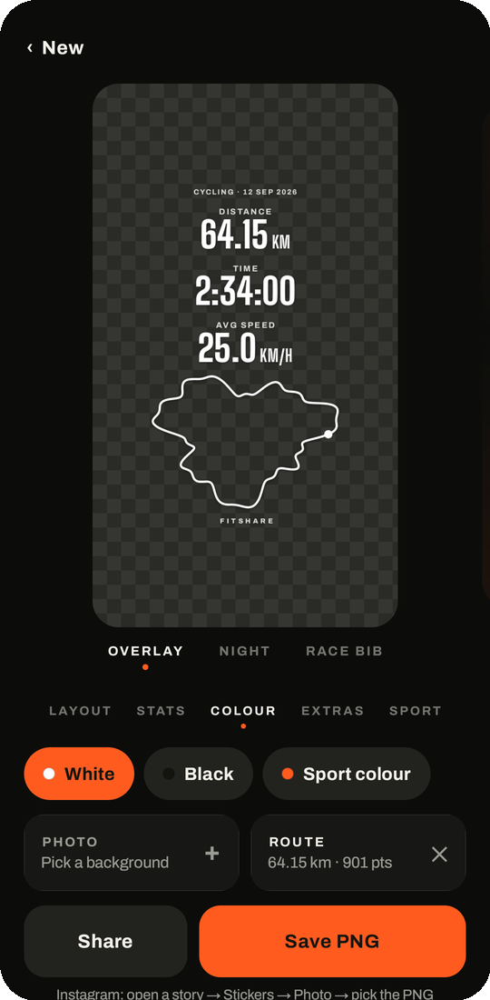

ANLEITUNG
Gadgetbridge-Training in die Instagram-Story
Gadgetbridge hält deine Trainings auf dem Handy und hat keinen Instagram-Knopf. Teil die FIT-Datei an FitShare, und du bekommst einen transparenten Sticker mit Werten und Route für jedes Story-Foto.
- In Gadgetbridge das Training öffnen, ⋮ → Fit-Datei teilen.
- Im Teilen-Menü FitShare wählen.
- Kein GPS in der Datei? Die Route aus OpenTracks (KMZ oder GPX) ebenfalls an FitShare teilen.
- Layout, Werte und Farbe wählen, dann PNG speichern.
- In Instagram eine Story öffnen, Sticker → Foto und das PNG wählen.

Tipps
- Deine liebste Einstellung unter Looks speichern. Beim nächsten Training bekommt der Sticker mit einem Tippen dasselbe Design.
- Km-Splits einschalten bei Fahrten und Läufen mit GPS: ein Balken pro Kilometer, der schnellste ist markiert.
- Für den Feed statt die Story: das Design Nacht oder Startnummer im Format 4:5.
APK herunterladenIm Browser öffnen
Die APK braucht Android 8.0 oder neuer und kein Konto. Updates holt sie sich selbst von GitHub. Die Web-App läuft auf iPhone, Android und am Rechner, ohne Installation; Bilder und Dateien verlassen das Gerät nicht.
Häufige Fragen
Wo ist der Teilen-Knopf in Gadgetbridge?
Das Training in der Aktivitätenliste öffnen, dann oben rechts das Drei-Punkte-Menü. Fit-Datei teilen schickt das ganze Training. JSON-Details teilen geht auch, hat aber keine Sportart und keine Pulskurve.
FitShare taucht im Teilen-Menü nicht auf
FitShare auf 1.5.0 oder neuer aktualisieren. Ältere Versionen nahmen nur JSON an, und Gadgetbridge teilt FIT-Dateien als allgemeine Binärdatei.
Mein Sticker hat keine Karte
Uhren ohne GPS, etwa die meisten Mi Bands, zeichnen nur den Puls auf. Die Route mit OpenTracks auf dem Handy aufzeichnen und die KMZ oder GPX ebenfalls an FitShare teilen. Sie kommt zum offenen Training dazu.